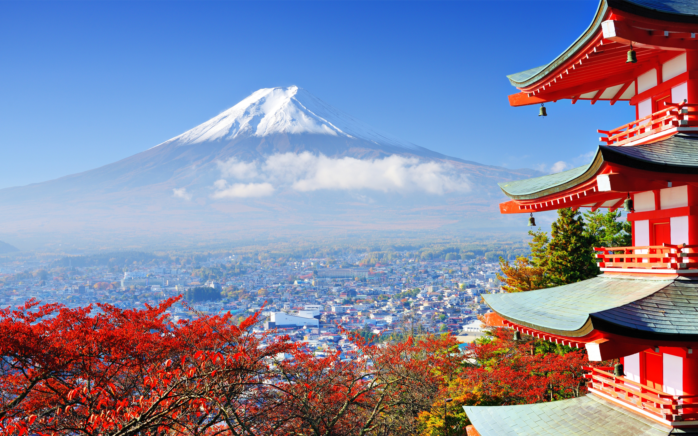

| 地質 | 歷史 | 宗教信仰 |
|---|
富士山是日本一座橫跨靜岡縣和山梨縣的活火山，位於東京西南方約80公里處，主峰海拔3776公尺，2002年8月（平成14年），經日本國土地理院重新測量後，為3775.63公尺，是日本國內的最高峰。 富士山頂冬季積雪，直至次年6、7月才會融化，在管理上屬於本州地區的富士箱根伊豆國立公園範圍內。在富士山山麓周圍，分布著5個淡水湖，統稱富士五湖，是日本著名的觀光度假名勝地。富士山有4個主要的登山口，分別為富士宮口、須走口、御殿場口、富士吉田（河口湖）口等，其中前三個登山入口都在靜岡縣內。 富士山不但名列日本百名山，同時也是日本三名山之一，在古代文獻中亦被稱為不二、不盡或是富慈，也經常被稱作芙蓉峰、富嶽或富岳。自古以來，這座山的名字就經常在日本的傳統詩歌「和歌」中出現。富士山與櫻花、新幹線並列為日本的國家象徵。富士山於2013年6月22日正式獲選列入世界文化遺產，是日本的第17個世界遺產（第13個世界文化遺產）。(下圖為富士山)
